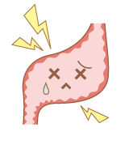

胃、胃酸与乳酸菌
乳酸菌保护胃健康的秘密
六月份第3个星期天是父亲节。您父亲好吗？
如果您的父亲胃不好，胃里可能存在着导致胃炎和溃疡的有害菌。
在这里总结一下乳酸菌击退有害菌的一些传说。
就此我们咨询了担任日本益生菌学会理事长,
东海大学医学部 古贺泰裕教授。
大家都知道大肠里有很多的有害菌。1983年证实胃里也有可引起胃炎和溃疡等疾病的细菌。就是螺旋状的“幽门螺杆菌”。平时它在胃粘液中游泳，为了摄取养分会粘在胃壁上引发炎症。如果反复发炎的话，胃就会像被磨破的地毯一样变得破烂不堪，出现溃疡等症状。即使通过药物治疗，如果不除掉幽门螺杆菌的话，两年内会有60-70%的人复发。
|
 |
 |
据说感染这种幽门螺杆菌的日本人大约有3,500万。你的父亲可能也会出现在这一群体里。抗生素对除菌有效，对胃溃疡发病者的幽门螺杆菌祛除疗法，通常使用两种抗生素和抑制胃酸分泌的药剂。直到不久前，幽门螺杆菌除菌治疗除了胃溃疡和十二指肠溃疡等部分疾病外，不适用保险。但是由于确认了药物的有效性和安全性，从2013年2月21日开始“胃溃疡”也加入到了保险对象中。
|
|
|
经过无数次反复试验，结果发现了一种可作为王牌军使用，名叫“乳酸菌OLL2716株”的菌种。证实幽门螺杆菌受制于乳酸菌产生的乳酸。认为“乳酸菌OLL2716株”具有效作用的根据主要有4个。
- （1）耐胃酸
即使在强酸性的世界里生存力也很强。
- （2）可在胃里活动
可在比大肠营养少的胃里活动。
- （3）会制造能击退幽门螺杆菌的乳酸菌
“乳酸菌OLL2716株”在胃里也会制造乳酸，弱化幽门螺杆菌。
- （4）能在有幽门螺杆菌繁殖的胃的上皮细胞里扎根
能粘附在有很多幽门螺杆菌的场所。
定期摄取这种乳酸菌的话，它能确实地粘附在胃粘膜上，起到防护罩的作用，保护胃的健康。除了胃病之外，还具有减少退烧止痛药引起胃粘膜粗糙以及酒精对身体伤害的作用。对喜欢喝酒的父辈和犯头痛的母辈也很合适的。